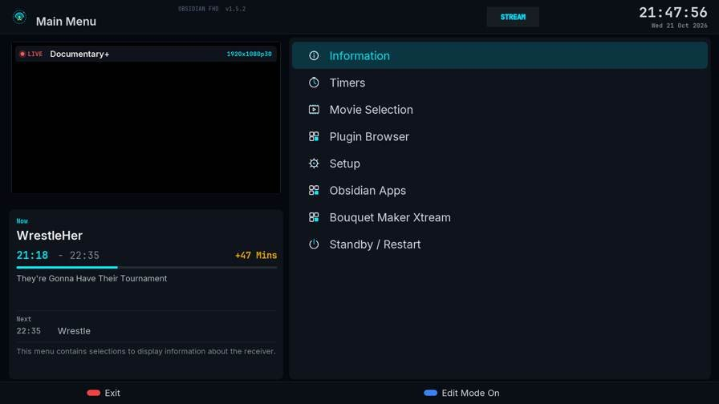
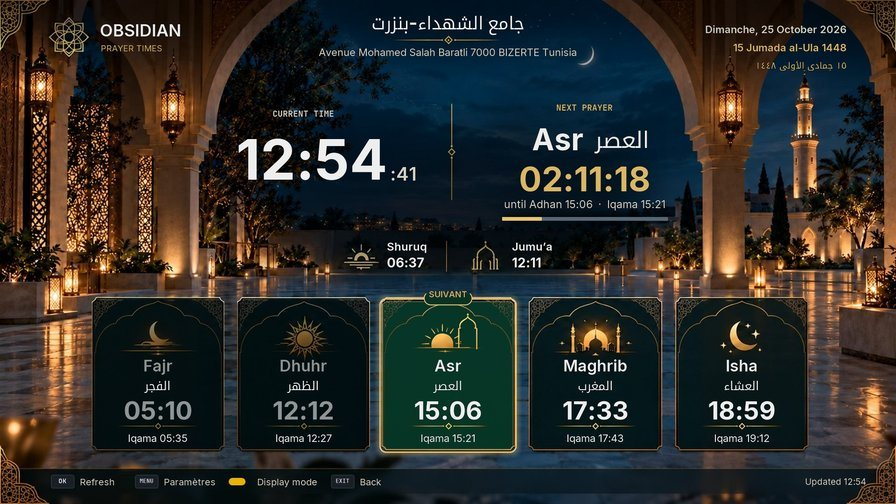
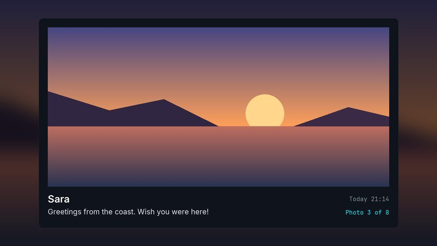
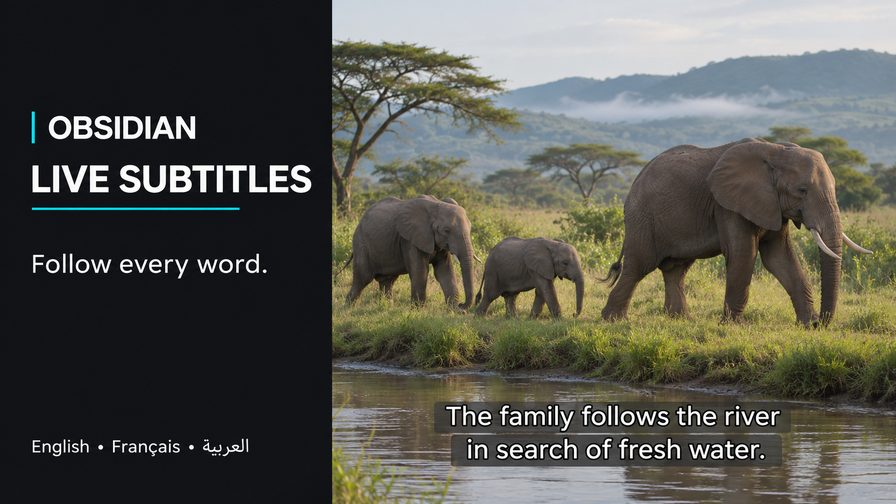
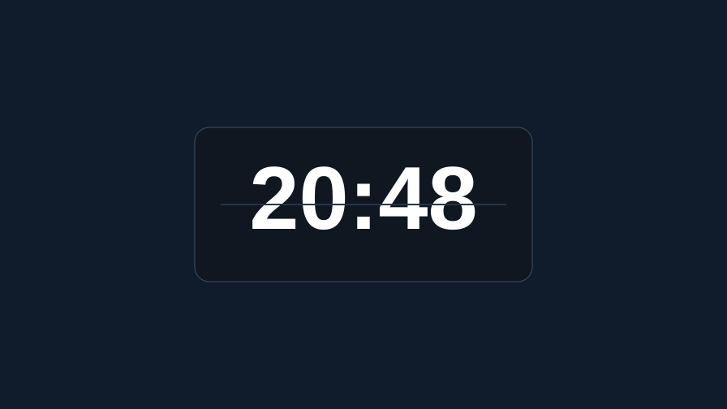

1.1.0
- Images de films en fond des listes de chaînes Floating et Slate (réglage Backdrops, désactivé par défaut)
- Meilleure reconnaissance des titres arabes et autres titres non latins (Enigma Architect)
Un skin 1080p sombre et moderne pour OpenATV, OpenPLi et d'autres images enigma2. Choisissez un style, ajoutez les applications Obsidian gratuites et changez l'apparence avec la télécommande. Aucun PC nécessaire.
wget -qO- https://raw.githubusercontent.com/dali44g/Obsidian-FHD/main/install.sh | sh

Changez dans MENU › Obsidian Apps › Styles. Classic et Floating sont inclus ; les autres sont de petits packs de style à télécharger depuis le même écran.

Classic : le look Obsidian d'origine, noir avec des accents cyan.
Menus, liste des chaînes et infobar peuvent chacun avoir un style différent. Comment changer de style ›
Installez-les depuis MENU › Obsidian Apps. Chacune est facultative, a ses propres mises à jour et se supprime proprement. Cliquez sur une application pour son guide.

Affiches de films et séries avec notes dans les infobars, avec des visuels En cours et À suivre séparés.

Regardez les chaînes du récepteur sur votre téléphone, tablette ou une autre TV à la maison, dans une application IPTV.

Une barre de raccourcis sur la TV en direct : guide, minuteries, enregistrements, cartes audio et sous-titres, vos applications.

Les horaires de prière de votre mosquée sur la TV, avec le compte à rebours de la prochaine prière.

Affichez les photos de votre téléphone sur la TV. Scannez un QR code, aucune application à installer.

Sous-titres et traduction en 25 langues, sur votre PC ou avec Groq. S’adapte seul à votre PC.

La météo du jour et les prévisions sur 5 jours dans l'infobar, avec OAWeather (OAWeather-Pli sur OpenPLi).

Gardez l'heure à l'écran pendant la TV. Choisissez le style, la position, la taille et la couleur.

Le débit vidéo et audio de la chaîne en direct, sous l'horloge ou dans l'infobar.
Utilisez SSH ou Telnet (PuTTY sous Windows) vers l'adresse IP du récepteur, utilisateur root.
L'installateur prend la dernière version et vérifie d'abord l'espace libre. Relancez-le plus tard pour mettre à jour.
MENU › Setup › System › User interface › Skin, choisissez Obsidian-FHD, puis OK.
wget -qO- https://raw.githubusercontent.com/dali44g/Obsidian-FHD/main/install.sh | sh
Vous préférez les fichiers ? Téléchargez le .ipk de la dernière version, copiez-le dans /tmp et lancez opkg install.
Un problème ? Consultez l'Aide, ouvrez un ticket sur GitHub ou postez dans le sujet du forum. Les rapporteurs sont crédités dans le journal.
L'affiche d'un film ou d'une série, sa note et un court résumé, affichés avec l'infobar. L'affiche suit le programme : En cours et À suivre ont chacun leur visuel dans la seconde infobar.
Nécessite internet, une clé TMDB gratuite et une clé USB ou un disque dur avec 100 Mo libres : les affiches ne vont jamais sur la flash du récepteur. Non approuvé par TMDB.

Les libellés s'affichent sur le récepteur dans la langue de vos menus.
Corrigé en 1.0.4 pour les images qui tournent depuis le disque dur (OpenMultiboot, EgamiBoot, NeoBoot). Mettez Posters à jour depuis Obsidian Apps.
Les affiches nécessitent un guide des programmes avec un titre connu de la base de films. Infos, sport et direct n'en ont jamais ; l'infobar affiche alors le picon.
Copiez la clé API (pas le jeton d'accès) depuis themoviedb.org › Settings › API et saisissez-la à nouveau.
Votre récepteur devient un serveur IPTV pour la maison : ajoutez-le dans TiviMate ou IPTV Smarters (identifiants Xtream Codes) ou collez son lien M3U dans VLC, avec le guide TV et les picons.
Réseau domestique uniquement, un appareil à la fois : la TV en direct se met en pause sur le récepteur pendant qu'un appareil regarde. Testé avec des chaînes IPTV ; satellite, câble et TNT pas encore testés.
Les libellés s'affichent sur le récepteur dans la langue de vos menus.
Utilisez le même réseau (pas un Wi-Fi invité). Après 5 mots de passe erronés, l'appareil attend 1 minute. Sur iPhone, autorisez « Réseau local » pour l'application dans Réglages › Confidentialité et sécurité.
Un autre appareil regarde, ou OK a été pressé il y a un instant (l'appareil est refusé pendant la durée choisie).
Actualisez la liste dans l'application IPTV après avoir ajouté ou renommé des bouquets.
Ouvrez le Dock avec un appui long sur OK pendant la TV et accédez à ce que vous utilisez le plus. Il suit votre style, ou choisissez le look Glass ou Depth.
Ne nécessite rien d'autre : ni internet, ni disque.
Les libellés s'affichent sur le récepteur dans la langue de vos menus.
L'image n'a pas d'écran pour ce raccourci (par exemple Télétexte). Choisissez-en un autre pour cette place.
Un autre plugin l'utilise peut-être. Réglez Open with sur Bleu ou Bleu long.
Les horaires de prière de votre mosquée depuis mawaqit.net, avec rappels avant l'adhan, alertes d'iqama et un mode affichage plein écran facultatif.
Nécessite internet et un compte mawaqit.net gratuit. Non réalisé par MAWAQIT.
Les libellés s'affichent sur le récepteur dans la langue de vos menus.
Corrigé en 1.1.2 pour les récepteurs connectés par câble. Mettez Mawaqit à jour depuis Obsidian Apps.
Vérifiez que la bonne mosquée est choisie dans Mosque, puis appuyez sur OK sur l'écran principal pour actualiser.
Envoyez une photo de votre téléphone à la TV : scannez le code, choisissez une photo et appuyez sur « Send to TV ». Les photos restent chez vous.
Nécessite un téléphone sur le même réseau. La photo affichée reste en mémoire seulement ; GREEN l'enregistre sur une clé USB ou un disque dur.
Les libellés s'affichent sur le récepteur dans la langue de vos menus.
Le téléphone doit être sur le même réseau que le récepteur (pas un Wi-Fi invité ni les données mobiles).
Corrigé en 1.0.2 pour les images qui tournent depuis le disque dur (multiboot). Mettez Cast à jour depuis Obsidian Apps.
Sous-titres et traduction en 25 langues, sur votre PC ou avec Groq. S’adapte seul à votre PC.
Nécessite ffmpeg (installé avec l'application) et un serveur vocal : une clé Groq gratuite (cloud) ou Docker sur un PC à la maison.
Confidentialité : avec Groq, de courts extraits du son de la chaîne sont envoyés à Groq. Avec votre PC, le son et le texte restent à la maison. La clé Groq est gardée dans un fichier que seul le système peut lire et n'apparaît jamais dans le journal.
Le PC fait la reconnaissance de la parole et la traduction : le son reste à la maison. Il ne faut que Docker, pas de carte graphique. Le PC et le récepteur doivent être sur le même réseau.
obsidian-subtitles de votre dossier utilisateur et la lance.irm https://github.com/dali44g/Obsidian-FHD/releases/download/subtitles-local-v3/install.ps1 | iex
curl -fsSL https://github.com/dali44g/Obsidian-FHD/releases/download/subtitles-local-v3/install.sh | sh
Ou avec le ZIP : téléchargez le ZIP d’installation, extrayez-le dans un dossier que vous gardez, par exemple Documents\obsidian-subtitles, et lancez l’installation dans ce dossier. Windows : clic droit sur setup.ps1 › Exécuter avec PowerShell, ou tapez la première commande ci-dessous dans un terminal ouvert dans le dossier. Mac/Linux : la deuxième commande.
powershell -ExecutionPolicy Bypass -File .\setup.ps1
sh setup.sh
Plus tard, pour revérifier les serveurs : docker compose run --rm check dans le dossier d’installation. Windows peut demander d’autoriser Docker sur les réseaux privés : acceptez. N’ouvrez jamais les ports 8000/5000 sur votre box.
docker compose down (n’ajoutez jamais -v : cela efface les modèles téléchargés). Conteneurs créés à la main (speaches, obsidian-translate, libretranslate) : arrêtez et supprimez uniquement ceux-là ; leurs volumes et dossiers restent..env et les modèles téléchargés sont conservés, les fichiers du programme sont remplacés. Avec le ZIP : extrayez-le par-dessus votre dossier d’installation et lancez l’installation.D:/obsidian-translate/argos, ou models dans un ancien dossier d’installation) ? Ouvrez .env dans le dossier d’installation, écrivez MODELS=D:/obsidian-translate (le dossier qui contient argos) et relancez l’installation. Les modèles vocaux déjà téléchargés sont conservés.192.168.1.20:8000.Les 25 langues fonctionnent comme langue parlée et comme langue des sous-titres. Les modèles se téléchargent seuls à la première utilisation d’une langue, puis restent sur le PC et fonctionnent sans internet. Tant qu’une traduction n’est pas prête, les sous-titres s’affichent dans la langue parlée.
Gardez environ 10 Go libres sur le PC pour Docker et les modèles.
| Langue | Modèle vocal (automatique) | Premier téléchargement de traduction |
|---|---|---|
| Arabic (ar) | Whisper medium (small sur un PC plus lent) | Un petit modèle par paire de langues, au premier usage |
| Persian (fa) | Whisper medium (small sur un PC plus lent) | Un petit modèle par paire de langues, au premier usage |
| French (fr) | Whisper small | Un petit modèle par paire de langues, au premier usage |
| English (en) | Whisper small | Aucun pour des sous-titres anglais |
| German (de) | Whisper small | Un petit modèle par paire de langues, au premier usage |
| Spanish (es) | Whisper small | Un petit modèle par paire de langues, au premier usage |
| Italian (it) | Whisper small | Un petit modèle par paire de langues, au premier usage |
| Turkish (tr) | Whisper small | Un petit modèle par paire de langues, au premier usage |
| Portuguese (pt) | Whisper small | Un petit modèle par paire de langues, au premier usage |
| Dutch (nl) | Whisper small | Un petit modèle par paire de langues, au premier usage |
| Bulgarian (bg) | Whisper medium (small sur un PC plus lent) | Un petit modèle par paire de langues, au premier usage |
| Croatian (hr) | Whisper medium (small sur un PC plus lent) | Un modèle partagé, environ 461 Mo, une fois |
| Serbian (sr) | Whisper medium (small sur un PC plus lent) | Un modèle partagé, environ 461 Mo, une fois |
| Bosnian (bs) | Whisper medium (small sur un PC plus lent) | Un modèle partagé, environ 461 Mo, une fois |
| Slovenian (sl) | Whisper medium (small sur un PC plus lent) | Un petit modèle par paire de langues, au premier usage |
| Macedonian (mk) | Whisper medium (small sur un PC plus lent) | Un modèle partagé, environ 461 Mo, une fois |
| Albanian (sq) | Whisper medium (small sur un PC plus lent) | Un petit modèle par paire de langues, au premier usage |
| Romanian (ro) | Whisper small | Un petit modèle par paire de langues, au premier usage |
| Greek (el) | Whisper medium (small sur un PC plus lent) | Un petit modèle par paire de langues, au premier usage |
| Polish (pl) | Whisper small | Un petit modèle par paire de langues, au premier usage |
| Czech (cs) | Whisper small | Un petit modèle par paire de langues, au premier usage |
| Slovak (sk) | Whisper medium (small sur un PC plus lent) | Un petit modèle par paire de langues, au premier usage |
| Hungarian (hu) | Whisper medium (small sur un PC plus lent) | Un petit modèle par paire de langues, au premier usage |
| Ukrainian (uk) | Whisper small | Un petit modèle par paire de langues, au premier usage |
| Russian (ru) | Whisper small | Un petit modèle par paire de langues, au premier usage |
Rien à régler. L’installation s’adapte à votre PC et, pendant que vous regardez, l’application mesure la vitesse du PC. S’il ne suit pas, Speech model = Recommended passe seul à un modèle plus petit (medium › small › base) et l’indique dans la ligne d’état. C’est retenu pour ce PC et le meilleur modèle est réessayé après une semaine, ou tout de suite avec Réglages › PC speed.
Les petits modèles sont un peu moins exacts, surtout pour l’arabe, le persan et les langues des Balkans. Si même le plus petit est trop lent, l’application propose Groq (gratuit, dans le cloud), qui n’a pas besoin de PC.
Avec votre PC, le son et le texte restent à la maison ; seuls les téléchargements de modèles utilisent internet. Une clé Groq enregistrée ne sert pas à traduire sauf si vous activez Allow cloud fallback. Choisir Groq comme serveur vocal envoie de courts extraits sonores à Groq.
Les libellés s'affichent sur le récepteur dans la langue de vos menus.
Vérifiez que Docker Desktop tourne et que le PC n’est pas en veille. Lancez docker compose run --rm check dans le dossier d’installation. Sur le récepteur, utilisez l’adresse affichée par l’installation (pas localhost), avec :8000.
L’application passe seule à un modèle plus petit après quelques secondes (voir PC lent ou ancien). Fermez les programmes lourds du PC, ou donnez plus de CPU et de mémoire à Docker dans Docker Desktop › Settings › Resources.
Le PC a besoin d’internet la première fois et de place libre. L’application réessaie seule ; les modèles qui marchent ne sont jamais effacés. Détails : docker compose logs --tail 100 speech translate.
Votre PC utilise une ancienne installation : suivez Mettre à jour une installation existante.
Le plan Groq gratuit a des limites horaires et journalières. Les sous-titres reviennent seuls ; une deuxième clé gratuite prend le relais tout de suite. Un serveur PC n'a pas de limite.
Les coupures courtes ne se voient pas. Après une plus longue, la chaîne joue sans sous-titres et ils reviennent seuls.
La ligne sous les tuiles indique quoi : l'adresse du PC, la clé Groq ou ffmpeg. BLUE ouvre le journal, BLUE à nouveau affiche un QR code pour l'envoyer.
wsl --install (ou wsl --update), puis redémarrez le PC.La météo du jour et les prévisions sur 5 jours en haut de l'infobar, au style du skin. Incluse dans le skin, elle ne nécessite que le plugin OAWeather.
Nécessite le plugin OAWeather et internet.
Les libellés s'affichent sur le récepteur dans la langue de vos menus.
Depuis la 1.8.0, le skin utilise la ville ou le lieu configuré quand le fournisseur ne donne pas de point d'observation. Choisissez et enregistrez votre lieu dans OAWeather.
Gardez l'heure à l'écran pendant la TV, en style Minimal, Flip ou Stacked. Incluse dans le skin, rien d'autre à installer.
Ne nécessite rien d'autre : ni internet, ni plugin.
Les libellés s'affichent sur le récepteur dans la langue de vos menus.
Si le plugin Permanent Clock séparé est activé, désactivez-le. Le skin Obsidian doit être le skin actif.
Le débit vidéo et audio de la chaîne, sous l'horloge ou dans l'infobar. Inclus dans le skin, il ne nécessite qu'un plugin de débit.
Nécessite BitrateViewer, ou le plugin Bitrate d'OpenPLi. Fonctionne sur les chaînes satellite, câble et TNT.
Les libellés s'affichent sur le récepteur dans la langue de vos menus.
Le débit est mesuré depuis le tuner, il ne fonctionne donc que sur les chaînes satellite, câble et TNT.
De courts guides pour le skin lui-même. Chaque application a sa page avec installation, réglages et dépannage.
L'installateur en une ligne, l'installation manuelle d'un .ipk et la mise à jour sans perdre vos réglages.
Changez les menus, la liste des chaînes et l'infobar, téléchargez des packs et revenez à Classic.
Ce qui est testé, ce qui fonctionne sans récepteur de test et les notes propres à chaque image.
Les questions les plus fréquentes du forum.
Les guides sont en cours d'écriture. En attendant, les pages des applications et le sujet du forum répondent à la plupart des questions.